採否は人間レビュー。各画像が cast.json の容姿・色・装備の正典と合っているか確認してください。OKのものは以降シーン挿絵の参照画像(ref)になります。
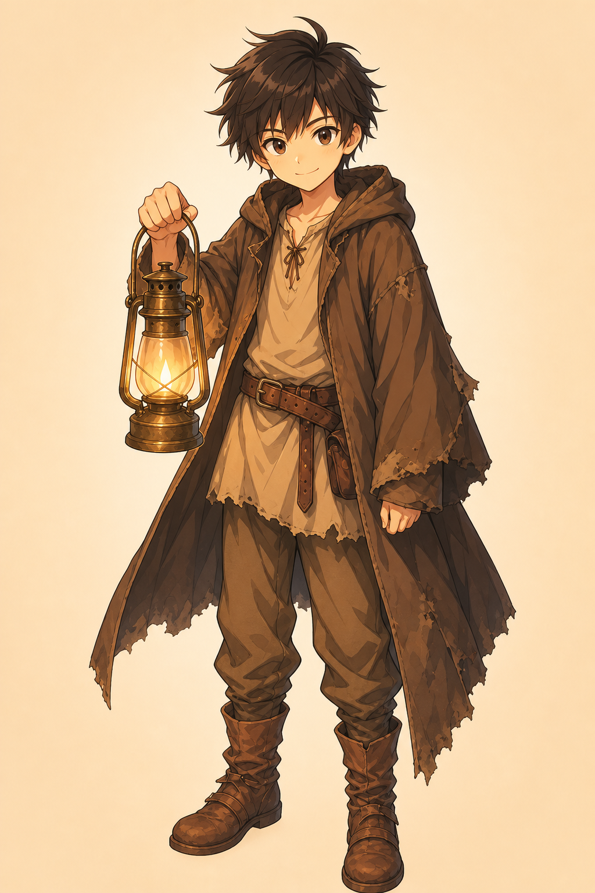
主人公・14歳 (第1章は12〜13歳の童顔)
表示方針: avoid_in_scenes
A 14-year-old boy with a boyish round youthful face, messy dark brown hair, sharp lively eyes, a slightly cheeky expression.
A worn traveler's coat over a simple tunic, cloth trousers, worn brown leather boots, a brown leather belt.
旧Anima参照: /home/tamura/llm/image_gen/review/tomoshibi_aki_ages/aki15_front_7_0.png
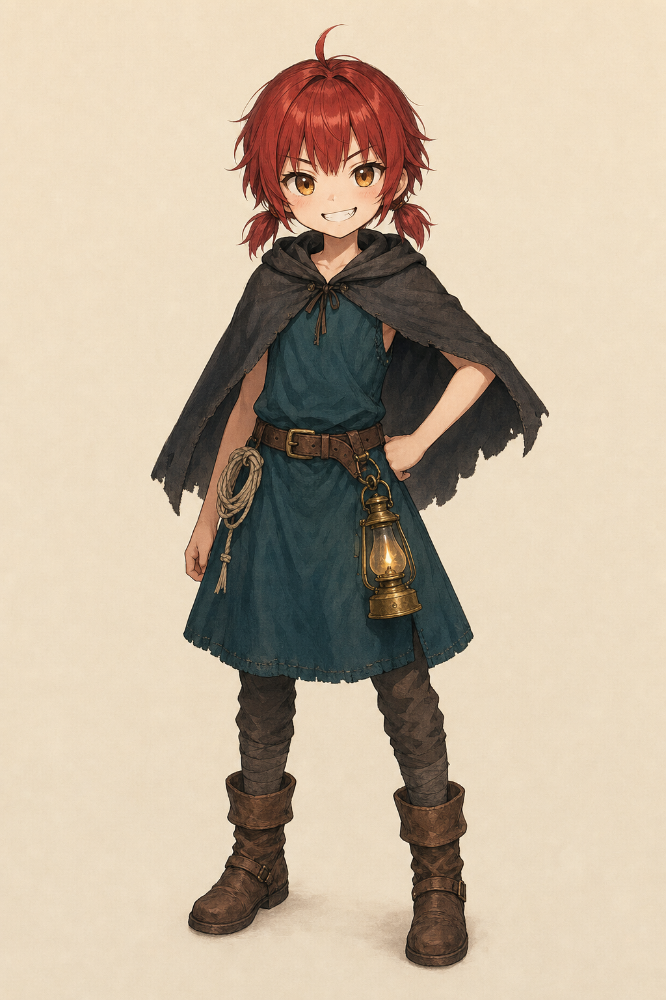
ヒロイン・幼馴染・第1章は12〜13歳
表示方針: full
A petite 12-to-13-year-old girl with a childish round face, short messy crimson-red hair with one small stray ahoge and exactly two small low side tails, blunt straight bangs, big amber eyes, a small fang, a confident cheeky grin.
A charcoal-grey short hooded cape over the shoulders, a deep teal sleeveless village tunic dress at knee length, a brown leather work belt at the waist, cloth leggings and worn brown leather boots.
旧Anima参照: /home/tamura/llm/image_gen/review/tomoshibi_yui_sheet/yuiF_ch1_front_11_0.png
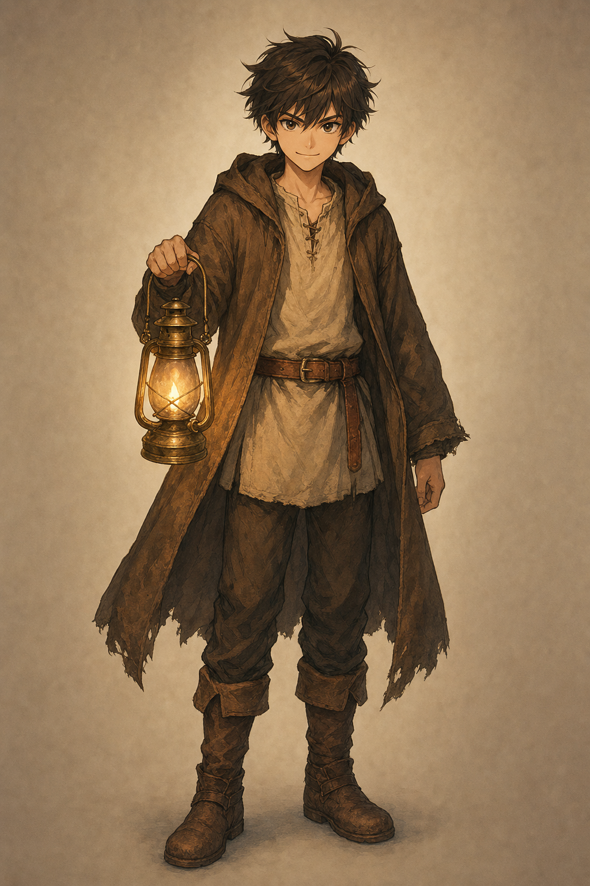
主人公・15歳・少年期
表示方針: avoid_in_scenes
A 15-year-old boy who still keeps a youthful boyish round face, messy dark brown hair, sharp lively eyes, a cheeky confident look, a little taller and leaner than as a child.
A worn traveler's coat over a simple tunic, cloth trousers, worn brown leather boots, a brown leather belt.
旧Anima参照: /home/tamura/llm/image_gen/review/tomoshibi_aki_ages/aki15_front_7_0.png
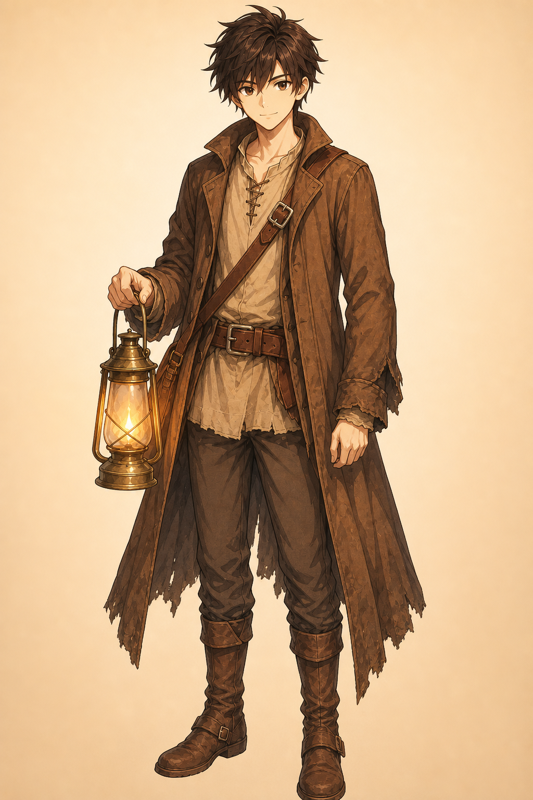
主人公・18歳・青年期(童顔のまま)
表示方針: avoid_in_scenes
An 18-year-old young man who STILL keeps a youthful boyish face (a baby-faced youth), messy dark brown hair, sharp eyes with a calmer steadier gaze, taller and leaner with a slightly more grown build, the same cheeky air softened by the years.
A worn well-traveled coat over a simple tunic, cloth trousers, worn brown leather boots, a brown leather belt.
旧Anima参照: /home/tamura/llm/image_gen/review/tomoshibi_aki_ages/aki18_front_7_0.png
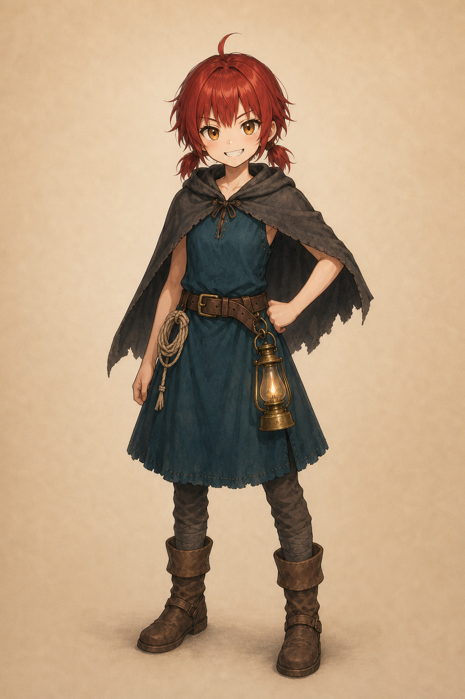
ヒロイン・15歳・少女期(童→大人の中間)
表示方針: full
A 15-year-old girl, between child and young woman, with a still-youthful face, short-to-medium messy crimson-red hair with one small stray ahoge and two small low side tails, blunt straight bangs, big amber eyes, a small fang, a confident cheeky grin.
A charcoal-grey short hooded cape over the shoulders, a deep teal sleeveless village tunic dress at knee length, a brown leather work belt at the waist, cloth leggings and worn brown leather boots.
旧Anima参照: /home/tamura/llm/image_gen/review/tomoshibi_grow/yui_mid_front_7_0.png
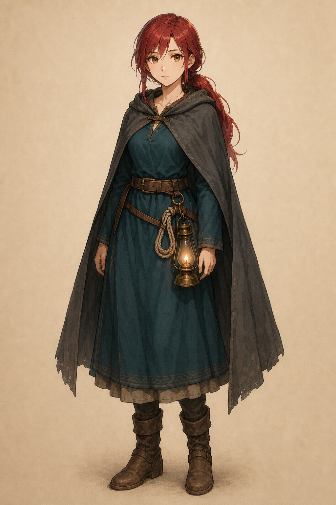
ヒロイン・18歳・年月を経て落ち着いた姿
表示方針: full
A fully grown 18-year-old young woman with a mature, womanly adult figure and a full bust as a natural part of growing into adulthood, a slender waist, longer crimson-red hair tied back in a low ponytail and side bangs, calm amber eyes, a gentle serene expression, grown calmer after years of loss and travel.
A charcoal-grey traveler's hooded cape over a deep teal tunic dress, a brown leather work belt, cloth leggings and worn traveling boots.
旧Anima参照: /home/tamura/llm/image_gen/review/tomoshibi_yui_sheet/yuiF_matured_front_23_0.png
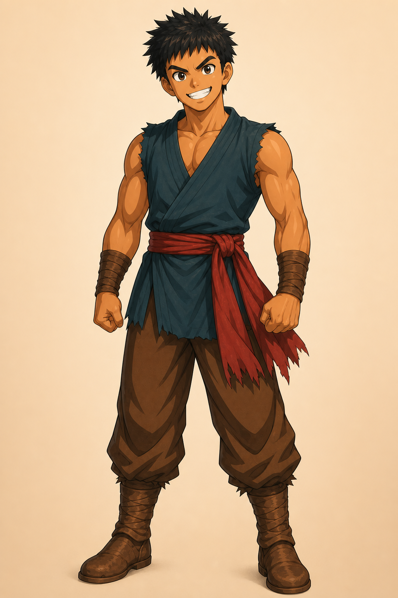
道中の相棒・15歳・灯詠み不能の好漢
表示方針: full
A large muscular 15-year-old boy, tall and broad-shouldered, tanned skin, short spiky black hair, thick eyebrows, a bold toothy grin, brimming with energy.
A sleeveless dark teal tunic, a red waist sash, brown trousers, worn brown boots, leather wrist wraps on both forearms.
旧Anima参照: /home/tamura/llm/image_gen/review/tomoshibi_cast/gaku_front_11_0.png
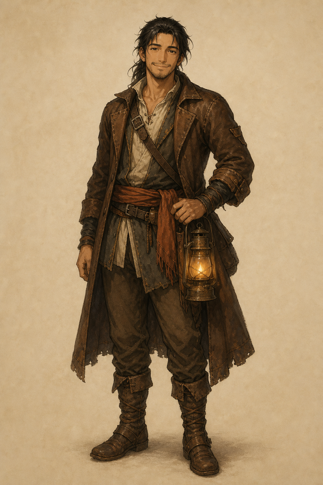
兄貴分・27歳・流れ灯詠み (第3章〜)
表示方針: full
A rugged friendly 27-year-old man with a big-brother air, medium-length dark hair loosely tied back, light stubble, warm confident easy smile, weathered but kind eyes.
A worn brown traveler's leather coat over a simple shirt, a sash, sturdy trousers and travel boots.
旧Anima参照: /home/tamura/llm/image_gen/review/tomoshibi_cast/kagari_front_23_0.png
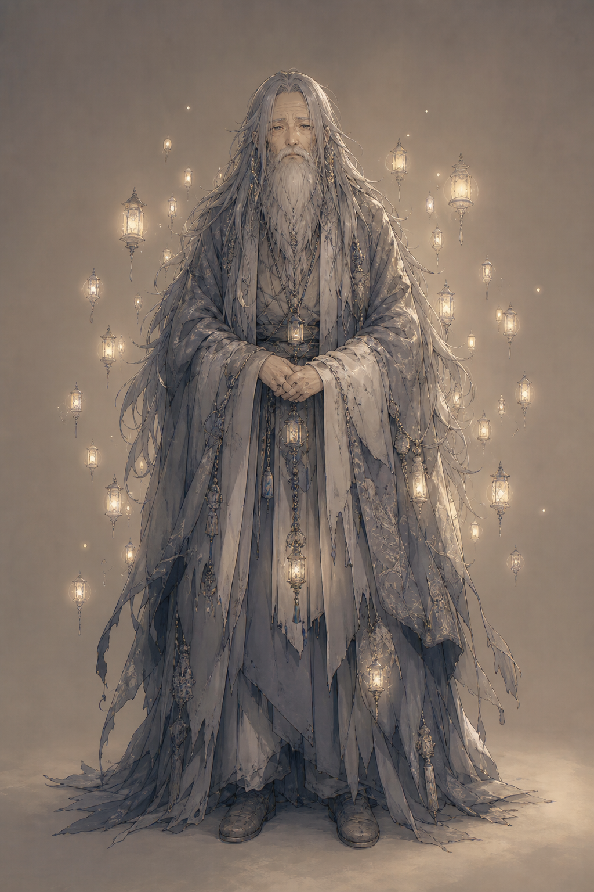
ラスボス・最初の最も強い灯詠み・叫ばない静かな翁
表示方針: full
An ancient, weary, quiet old man, hundreds of years old, with long grey-white hair and a long beard, a calm sorrowful expression, never shouting, an air of profound loneliness.
Long flowing ash-grey robes faded with age, worn over centuries.
旧Anima参照: /home/tamura/llm/image_gen/review/tomoshibi_cast/towa_front_23_0.png
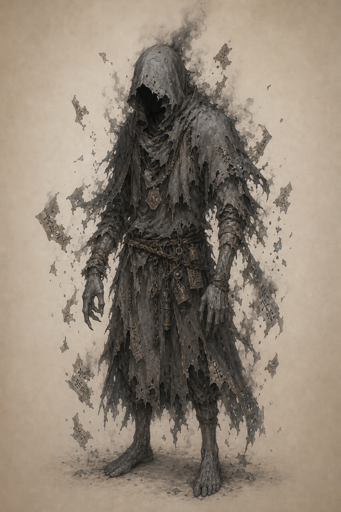
第2章ボス・灰の手先
表示方針: full
A gaunt hunched man, his ashen desaturated grey skin, his face hidden in deep shadow under a tattered hood, dull lifeless grey tones all over him.
Tattered dusty grey ragged robes with a tattered hood.
旧Anima参照: —
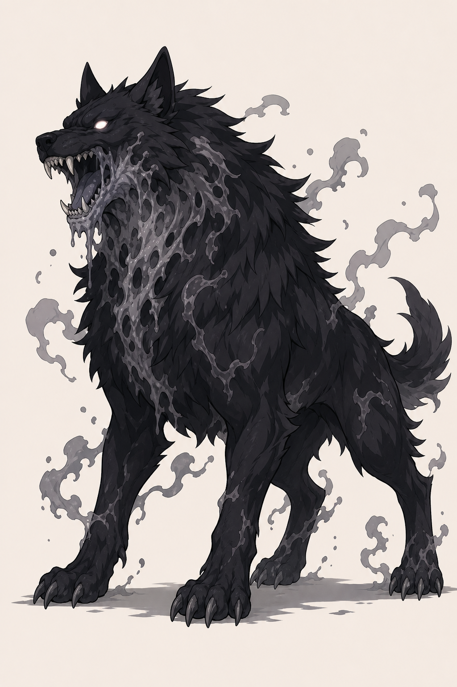
第1章ボス・獣
表示方針: full
A large menacing wolf-like beast with black fur, glowing faintly, grey ash leaking and seeping from its throat and maw.
旧Anima参照: —
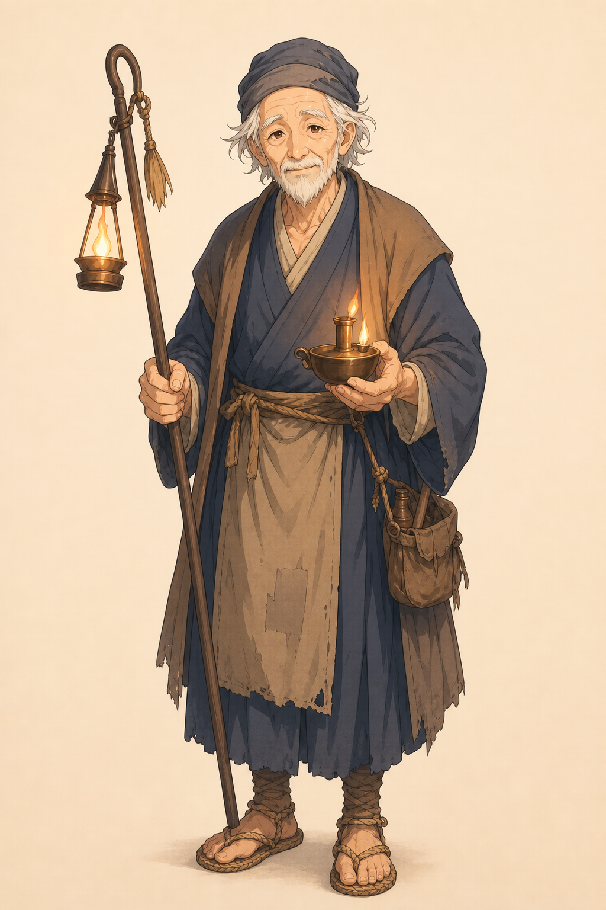
ナギ村の老灯守・第1章で失語する準キャラ
表示方針: full
A gentle elderly village lamp-keeper, deeply wrinkled kind face, thin white hair and a short white beard, a quiet caring expression.
Simple humble pre-modern village robes and a worn apron, a cloth cap.
旧Anima参照: —
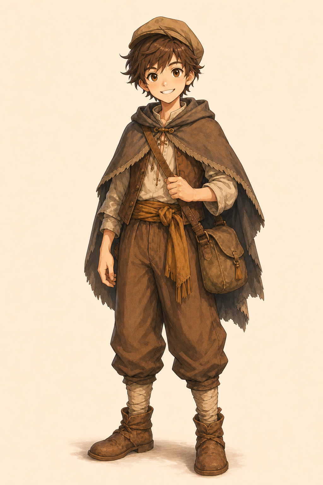
隊商の少年・第2章の脇役
表示方針: full
A young caravan boy of about 11 years old, lively curious eyes, tousled brown hair, a friendly open face, a bit travel-worn.
Simple sturdy pre-modern traveler's clothes, a short cloak and a small cloth cap, a satchel.
旧Anima参照: —
形見のカンテラに宿る声・姿なし(立ち絵不要設計)
表示方針: no_figure
No human figure at all. An old brass hand lantern (a kantera) standing alone, its small warm flame glowing softly inside, faint motes of light drifting from it, as if a quiet voice lives within. An intimate still-life portrait of just the lantern.
旧Anima参照: —